Workfabric
AI
The marketing site for ContextFabric, a context layer that sits underneath an enterprise’s AI agents. The hard part was never the layout. It was finding something to show, for a product whose whole value is that you never see it.
Infrastructure has no photograph.
ContextFabric learns how an organisation actually works — the cross-app sequences, the naming conventions, the exceptions people handle without ever writing them down — and hands that to AI agents so they act like someone who has worked there a while.
It is plumbing. It has no interface of its own worth showing, because the point is that it disappears into Salesforce, Slack, Zendesk and whatever agent framework the company already bought. A screenshot of a context layer is an empty rectangle.
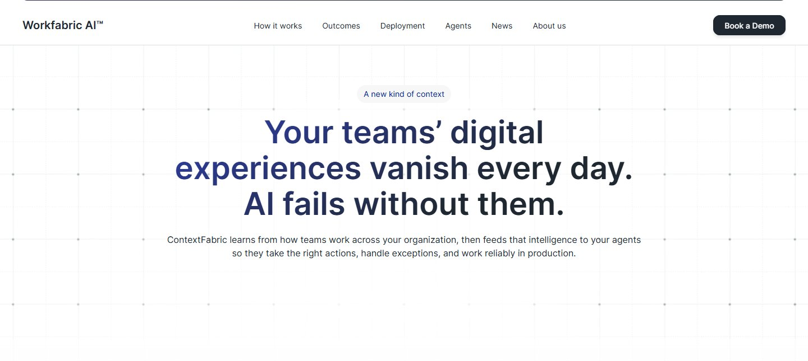
Every enterprise AI site uses the same seventy words.
Context. Grounding. Agentic. Reliability. Governance. A buyer evaluating four vendors in an afternoon reads the same paragraph four times and leaves with nothing to tell them apart. Saying it more confidently than the last site does not make it more legible.
The audience makes it harder. This is not something you try in a browser tab — the reader is an enterprise architect or a head of revenue operations, arriving sceptical, already holding a list of reasons this will not survive contact with their company. They do not need to be excited. They need to be shown that somebody has met their actual mess.
Show the evidence, not the product.
If the product cannot be photographed, photograph what it reads. Almost every panel on the site is a reconstruction of a real cross-application sequence, drawn as a chain of small labelled cards. Zendesk → Excel → DocuSign, when a support rep works out that an SSO request is really an upgrade. Gong → Notion → Slack, when an account executive hears a competitor named on a call. Named tools, named roles, an arrow between them.
It works because the reader recognises the mess. Nobody needs tribal knowledge defined for them once they have seen “their CFO always bluffs before renewal” sitting in a Slack DM card. The argument gets made by specificity instead of adjectives.
What it costs. These are drawings, not screenshots, and a drawing invites the question a screenshot does not: is any of this real. It also leaves the site carrying a maintenance bill no product screenshot would — dozens of hand-built panels that have to stay truthful as the product changes, in a tool with no component library to change them from. That bill was taken on deliberately, in exchange for being understood at all.
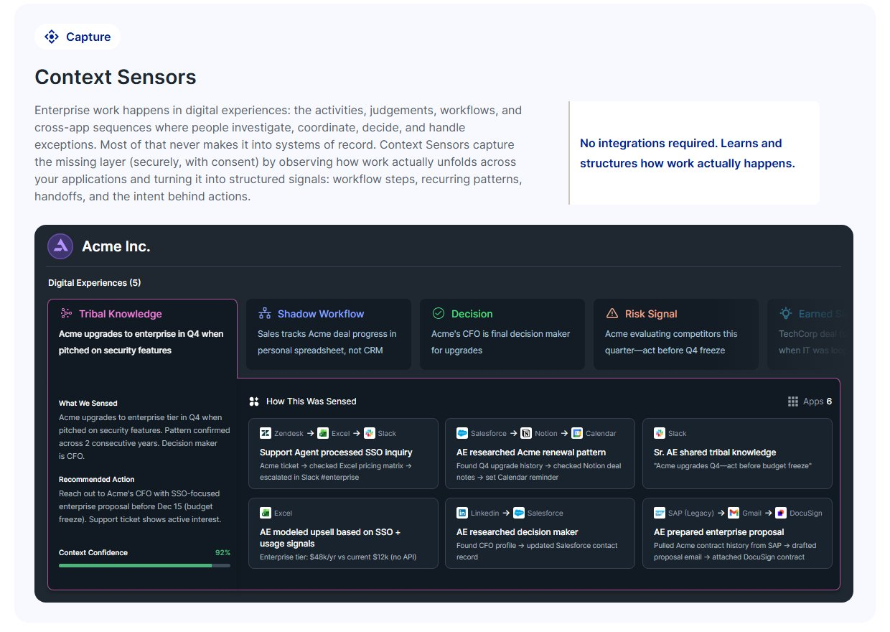
Two cards, side by side.
The same account, the same question, answered twice. On the left the agent has the CRM: account active, NPS eight, send the monthly newsletter. On the right it also has the context — a support ticket asking for SSO, a competitor named on a call, usage at ninety-four per cent — and the recommendation becomes an enterprise proposal.
It is the one place on the page where the pitch lands without being read. The left-hand card is deliberately plausible rather than stupid: a strawman would have cost the whole argument its credibility with exactly the reader it is aimed at.
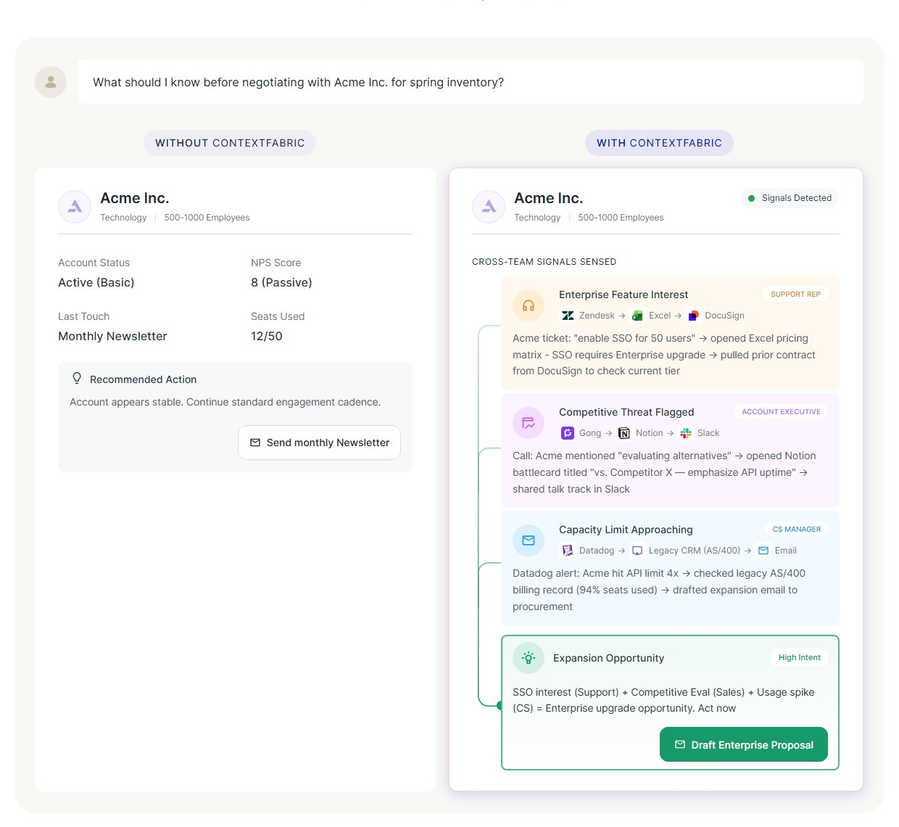
Capture, organise, deliver — and nothing else to remember.
A reader who leaves with one thing should leave with the shape. The product is named as three components in a fixed order, each with a verb, so the page can go as deep as it likes afterwards without the reader losing the thread: Context Sensors capture, the Context Cloud organises, the Context Orchestrator delivers.
The Cloud is the section that most wanted to become a diagram of boxes and got a crowd instead — departments and geographies scattered across a dark field, with one sales team magnified far enough to show the individual work and the tribal knowledge sitting under it. An architecture diagram would have said “this is a database”. The crowd says “this is your company”, which is the claim actually being made.
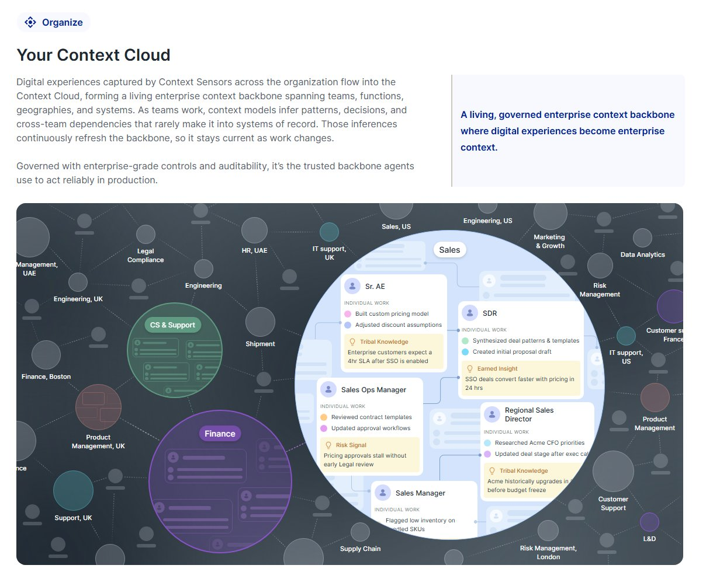
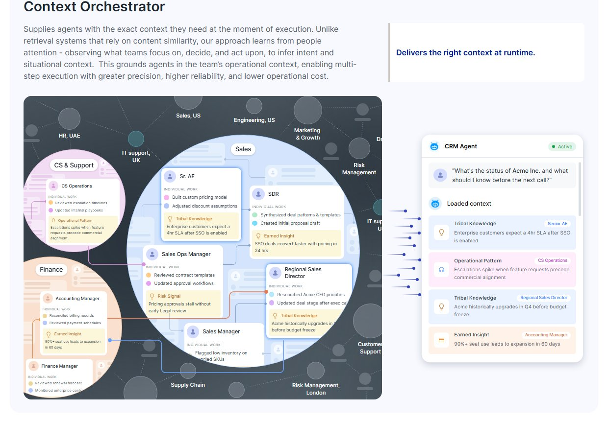
Let the reader watch one get built.
High on the page, before a single component has been named, one panel runs a request end to end: a head of revenue operations asks for a lead-enrichment agent that enriches the way the team actually does it, and the panel shows the workflow being reverse-engineered, the naming conventions learned, twelve edge cases observed, and the agent assembled and benchmarked.
It is a long thing to put that early. The bet is that a sceptical reader gives you one demonstration and no more, so it had better be the whole arc rather than a feature.
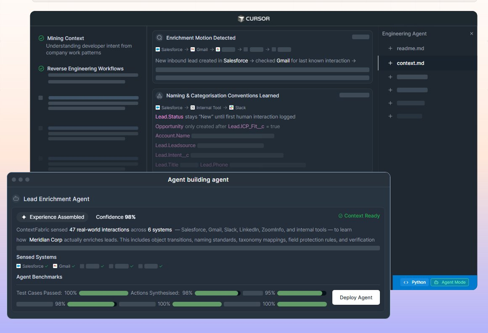
The second half of the page is a list of reasons to say no.
Past the explanation, the site stops describing and starts pre-empting. What does it get me — three numbers, large and unqualified, the only place on the page that trades nuance for a headline. What will it cost my IT team — no integration required, across mainframes and legacy systems. Will it work with what we already bought — Cursor, Agentforce, Sierra, ServiceNow, Workday, Harvey, named in a grid rather than claimed in a sentence. What happens to our data — zero trust, minimum approved context, audited.
Then a block of real Python against a real MCP endpoint, dark against the light page. For a technical evaluator that code is worth more than the four sections before it, because it is the first thing on the page that could be false in a checkable way.
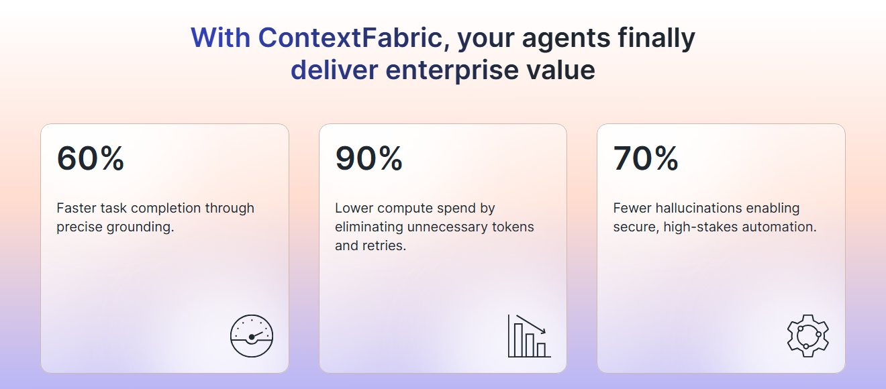
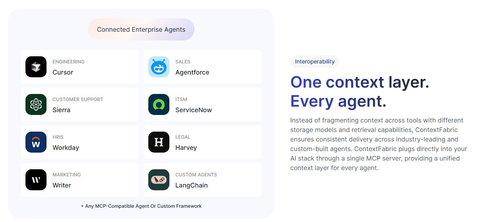
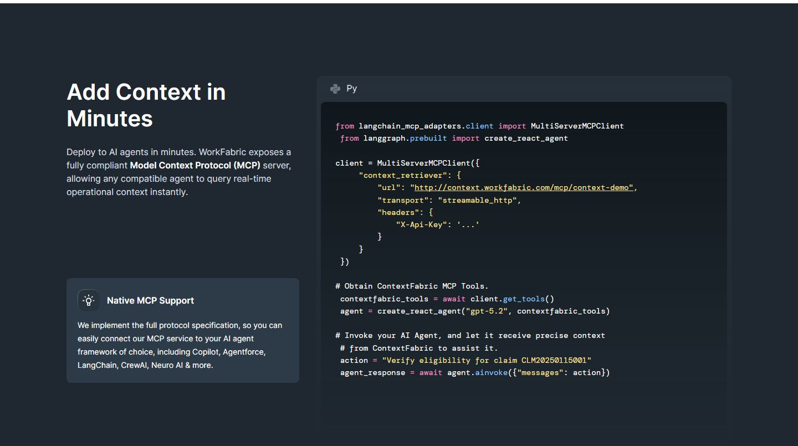
Eight industries, one worked example each.
An enterprise buyer does not generalise from somebody else’s vertical, so the page lets them pick their own and then goes narrow: a churn agent that finds the cancellation email a support rep filed as a general inquiry, a shadow-spend agent that finds the fourteen people booking travel outside Concur because Concur times out.
Both examples are unflattering to the customer, which is the point. The product’s value is that it sees what the systems of record missed, and an example where nothing was missed would demonstrate nothing.
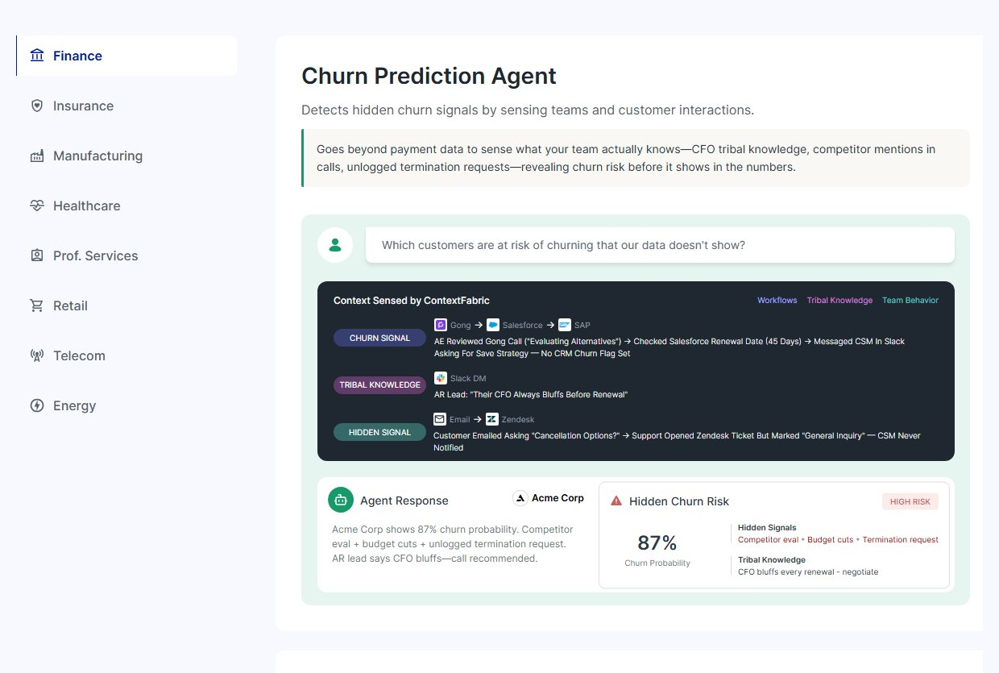
What shaped the work as much as the brief did.
Built in Figma Sites. The design tool is also the CMS, which is the only reason a site this illustration-heavy could ship at the pace it did — there is no handoff, and a panel can be redrawn the afternoon it turns out to be wrong. The cost is everything a front-end codebase gives you for nothing: no components to change once, no build step, and a page that stays honest only by hand.
A category that does not exist yet. There is no shelf the reader can already put this on, so the site spends its first third establishing the problem before it is allowed to sell anything.
Enterprise claims are legally live. Every number, every named integration and every implication about a customer is something the company has to stand behind — which is why the illustrative panels run on a fictional account and the hard claims are kept few.
Roughly fourteen and a half thousand pixels. A long page is the honest answer to a complicated product and a sceptical reader, but it means the navigation, the section labels and the repeated card language are the things carrying the reader, not the scroll.
Live, and the place the rest of the company points at.
The site is published and is where the company’s press lands — the Cognizant partnership, the Harvard Business Review pieces, the keynote — all of it arriving on a page that has to explain the product from zero in a single visit.
What I will not claim is performance. Traffic, conversion and demo bookings sit with the company and are not mine to publish, so the honest report is what shipped and why it is shaped the way it is.
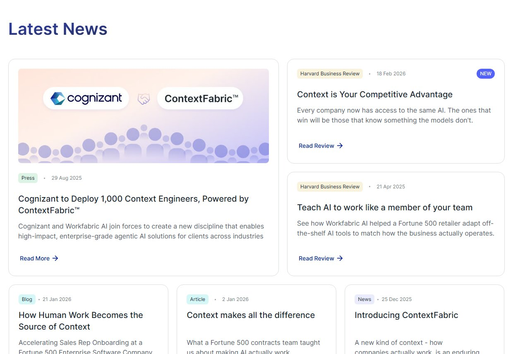
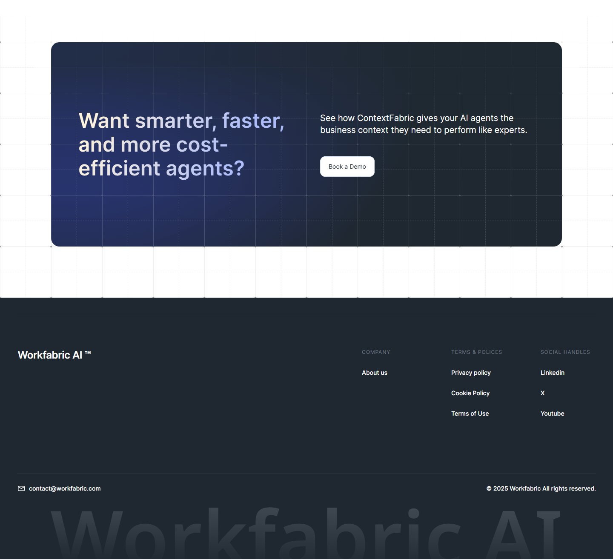
What I would do differently.
The illustrated panels are the best thing on the site and its largest liability. Drawn by hand in a design tool, they will drift from the product the first time a component gets renamed, and nothing makes that drift visible. I would build the recurring card language — the tool chip, the arrow chain, the inference card — as a strict set with a written rule for each, so the fiftieth panel is cheaper than the fifth and a change can be made in one place.
I would also fight harder for a short path through it. Everything here earns its place for a reader who reads all of it, and almost nobody does. A four-screen version of the same argument, with the long page behind it, would serve the architect who arrives having already decided to evaluate.